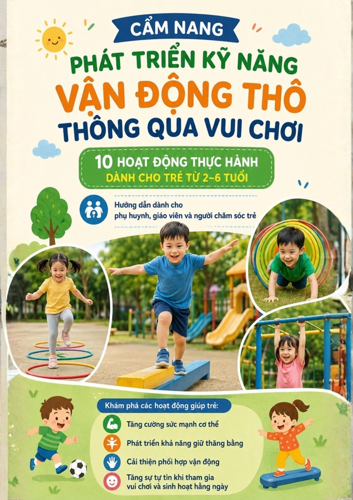
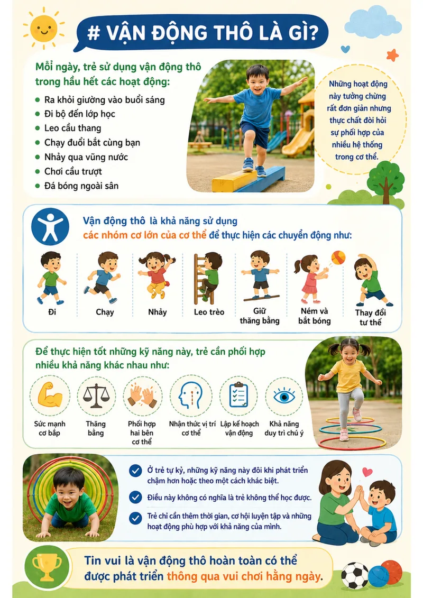
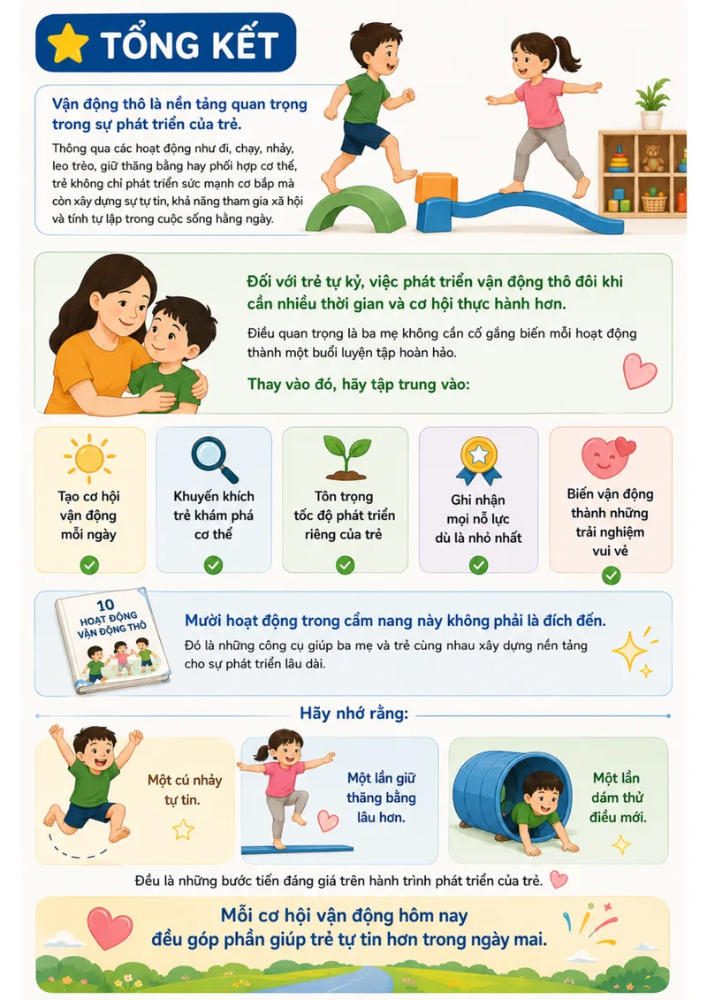
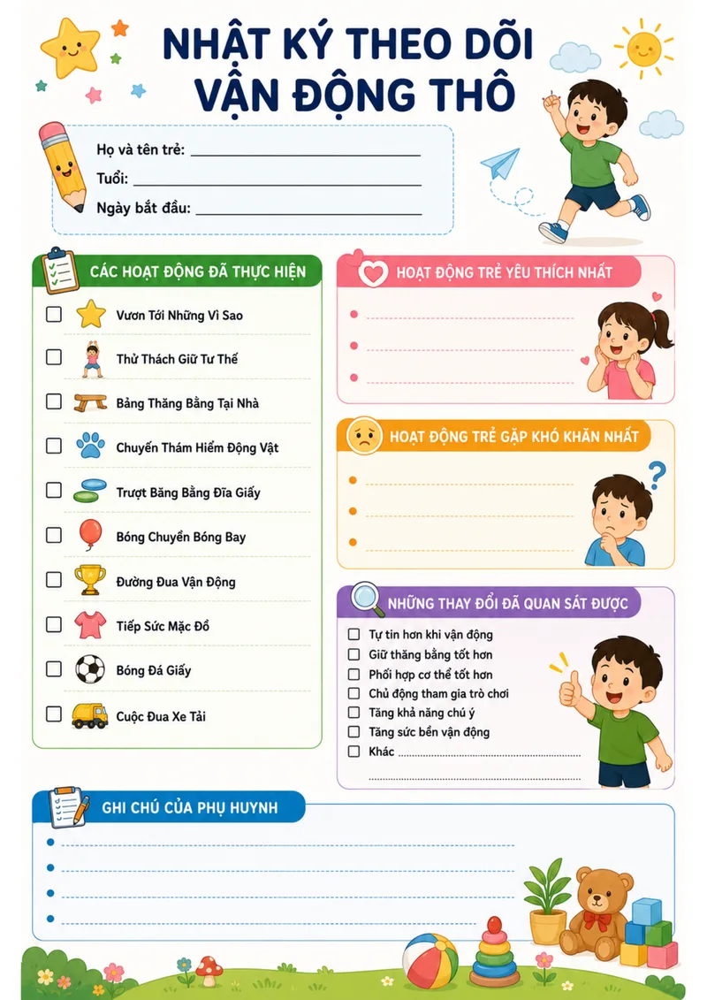

01
Thiết kế cho "trẻ gặp khó khăn trước"
Dành riêng cho những bé chạy còn loạng choạng, sợ thăng bằng, ngại leo trèo hoặc vụng về khi phối hợp tay-chân. Từng cử động đều được giảm thiểu áp lực giác quan.
Bộ cẩm nang 18 trang hướng dẫn các hoạt động vận động thô tại nhà. Mỗi trò chơi chỉ 5–10 phút trong phòng khách – không cần phòng gym, không dụng cụ đắt tiền, chỉ cần tình yêu và sự kiên nhẫn của cha mẹ.

Một lời nhắn gửi chân thành
Mẹ đã mua đủ các loại đồ chơi, cầu trượt trong nhà, xe chòi chân... nhưng con vẫn ngại chạm vào, thường xuyên vấp ngã hoặc né tránh mọi hoạt động leo trèo. Đôi lúc giữa những đêm dài, mẹ tự hỏi trong nước mắt: "Có phải mình làm chưa đủ tốt? Sao con người ta chạy nhảy nhanh nhẹn mà con mình lại khó khăn đến thế?"
Sự thật là: Hầu hết các tài liệu và trò chơi vận động thông thường đều được thiết kế cho những đứa trẻ phát triển điển hình. Não bộ của trẻ tự kỷ và trẻ có rối loạn điều hòa giác quan tiếp nhận tín hiệu chuyển động theo một cách rất riêng biệt.
Trẻ tự kỷ cần những điều mà thế giới ngoài kia thường bỏ quên:
Con cần nhịp điệu chậm rãi để định vị cơ thể trong không gian.
Một bước chân chạm băng dính cũng là một chiến thắng nhỏ.
Không áp lực thành tích. Chỉ cần con cười và chịu hợp tác cùng mẹ.
Chính vì hiểu điều này, chúng mình đã tổng hợp cẩm nang: biến các bài tập trị liệu hoạt động (OT) phức tạp thành 10 trò chơi gia đình êm dịu. Bố mẹ có thể bắt đầu hỗ trợ con ngay hôm nay.

Giá trị cốt lõi
Không phải là cuốn sách giáo khoa lý thuyết dài dòng, đây là bộ cẩm nang cầm tay chỉ việc thực tế để bố mẹ mở ra và cùng chơi với con ngay hôm nay.
Dành riêng cho những bé chạy còn loạng choạng, sợ thăng bằng, ngại leo trèo hoặc vụng về khi phối hợp tay-chân. Từng cử động đều được giảm thiểu áp lực giác quan.
Không làm kiệt sức cả mẹ lẫn bé. Các trò chơi tận dụng đồ dùng sẵn có trong nhà như băng dính giấy, gối ôm, bóng bay, thìa nhựa hoặc thùng carton tái chế.
Mỗi hoạt động đều có phiên bản đơn giản hơn (khi bé sợ hãi, chưa dám thử) và phiên bản nâng cao hơn (khi bé đã thành thạo) cùng góc quan sát an toàn cho mẹ.
Trọng tâm là xây dựng niềm vui và sự gắn kết gia đình. Mẹ không phải đóng vai "chuyên gia nghiêm khắc", mà là người bạn đồng hành ấm áp nhất của bé.
Mẫu checklist 1 trang thông minh giúp bố mẹ ghi chép lại trò chơi con yêu thích, thời điểm con vượt qua e dè, và những cột mốc tiến bộ đáng tự hào.
Chỉ cần tham gia nhóm Zalo là nhận trọn vẹn file PDF 18 trang về điện thoại hoặc máy tính. Không quảng cáo rác, không yêu cầu thanh toán hay cung cấp thẻ ngân hàng.
Phù hợp & Giới hạn
Sự chuyển biến tích cực
Không cần kỳ tích ngay sau 1 đêm. Sự tiến bộ của trẻ tự kỷ được đo bằng sự bình an và từng chuyển động tự tin hơn mỗi ngày.
Kiến thức chuyên môn
Vận động thô là nền tảng cho học tập, cảm xúc và giao tiếp xã hội. Hãy nắm vững 5 nguyên tắc vàng trước khi bắt đầu cùng con.

Giúp con kiểm soát cơ thể để dễ dàng ngồi học, xây dựng sự tự tin, phát triển tương tác bạn bè và điều hòa các cơn khủng hoảng cảm xúc.

Hãy để con được chơi – Bắt đầu từ điều con làm được – Tôn trọng sự khác biệt – Khen ngợi nỗ lực thay vì kết quả – Tận dụng mọi cơ hội mỗi ngày.
Khám phá nội dung cẩm nang
Mỗi trò chơi trong cẩm nang đều được minh họa sinh động, hướng dẫn từng bước cụ thể và có chế độ điều chỉnh độ khó.
 🔍 Chạm xem trang
🔍 Chạm xem trang
Mẹ dán các ngôi sao giấy ở nhiều độ cao khác nhau trên tường. Trẻ hóa thân thành phi hành gia, kiễng chân, vươn tay và nghiêng người hái sao.
 🔍 Chạm xem trang
🔍 Chạm xem trang
Trẻ hóa thân thành chú ếch ngồi, hồng hạc đứng 1 chân hoặc chú mèo duỗi lưng. Cùng mẹ đếm ngược 5 giây xem ai giữ thăng bằng giỏi hơn.
 🔍 Chạm xem trang
🔍 Chạm xem trang
Dán một đường băng dính thẳng trên sàn hoặc xếp các tấm thảm xốp. Trẻ làm nhiệm vụ đi qua "cây cầu khỉ", mang theo bạn gấu bông về đích.
 🔍 Chạm xem trang
🔍 Chạm xem trang
Trẻ bắt chước chuyển động của động vật: bò lững thững như gấu, bật nhảy như ếch con, đi ngang như cua biển, tạo nên cuộc phiêu lưu kỳ thú.
 🔍 Chạm xem trang
🔍 Chạm xem trang
Cho bé đặt hai bàn chân lên 2 đĩa giấy (hoặc khăn lau nhỏ), trượt nhẹ nhàng trên sàn gạch như vận động viên trượt băng nghệ thuật.
 🔍 Chạm xem trang
🔍 Chạm xem trang
Thổi một quả bóng bay nhiều màu. Quả bóng rơi rất chậm giúp trẻ tự kỷ có đủ thời gian quan sát đường bay và giơ tay đỡ bóng một cách bình tĩnh.
 🔍 Chạm xem trang
🔍 Chạm xem trang
Tạo chuỗi 3–4 thử thách nhỏ liên tiếp: bước qua gối ôm -> chui qua gầm bàn -> ném bóng vào sọt. Giúp bé rèn luyện khả năng chuyển tiếp hoạt động.
 🔍 Chạm xem trang
🔍 Chạm xem trang
Biến việc mặc quần áo thành trò chơi: bé chạy đến lấy mũ đội lên, chạy lượt sau lấy áo khoác hoặc tất chân, vừa rèn vận động vừa học tự lập.
 🔍 Chạm xem trang
🔍 Chạm xem trang
Dùng 2 chiếc dép làm khung thành nhỏ, vò giấy thành quả bóng êm. Bé đứng trụ chân và dùng chân còn lại sút bóng vào lưới trong tiếng reo hò của mẹ.
 🔍 Chạm xem trang
🔍 Chạm xem trang
Tận dụng thùng carton hoặc chậu nhựa, chất đồ chơi nặng vừa phải. Trẻ đẩy hoặc kéo "chuyến tàu chở hàng" về ga an toàn.
Hình ảnh thực tế
Tài liệu được thiết kế chỉn chu, màu sắc tươi sáng, hình ảnh trực quan sinh động và hướng dẫn từng bước rõ ràng cho gia đình.

Thiết kế đẹp mắt, tóm lược các nhóm kỹ năng vận động thô và độ tuổi mục tiêu (2–6 tuổi) để cha mẹ tiện theo dõi.

Giải thích dễ hiểu vì sao trẻ tự kỷ lại gặp khó khăn với vận động, xua tan cảm giác hoang mang và lo lắng vô cớ cho bố mẹ.
Mỗi hoạt động có mục tiêu, bước chuẩn bị, 5 bước thực hiện, phiên bản điều chỉnh độ khó và các lưu ý an toàn tuyệt đối.

Một cú nhảy tự tin hay một lần dám thử điều mới đều là những bước tiến quý giá trên hành trình phát triển của con.
Tặng kèm trong cẩm nang
Được thiết kế sẵn dưới dạng checklist 1 trang để bố mẹ có thể in ra hoặc lưu trên điện thoại. Không cần ghi chép phức tạp, chỉ cần vài nét tick nhẹ mỗi tối:

🔍 Chạm để xem mẫu nhật ký (Trang 17)
Uy tín & Khoa học
Chuyên gia Trị liệu Hoạt động Nhi khoa (Pediatric Occupational Therapist) hàng đầu tại Hoa Kỳ, tác giả cuốn sách thực hành nổi tiếng thế giới dành cho các gia đình có trẻ đặc biệt.

Được chuyển ngữ, chọn lọc và tinh chỉnh phù hợp nhất với điều kiện sinh hoạt của các gia đình Việt Nam: không gian nhà phố/chung cư, vật dụng dễ tìm và ngôn ngữ gần gũi.
Cách thức nhận tài liệu
Tài liệu được gửi tự động trong nhóm Zalo ngay sau khi bạn tham gia, hoàn toàn không thu phí.
Nhấn vào nút bên dưới để mở nhóm Zalo cộng đồng phụ huynh đồng hành cùng con.
Mở ứng dụng Zalo trên điện thoại hoặc máy tính và chọn "Tham gia nhóm".
File PDF 18 trang được ghim sẵn trong nhóm. Mẹ tải về đọc trực tiếp hoặc in ra giấy.
Nhận ngay file cẩm nang PDF 18 trang, đồng thời kết nối cùng hàng trăm phụ huynh khác để trao đổi kinh nghiệm, hỏi đáp cách tương tác khi con e ngại, và động viên nhau trên hành trình nuôi dạy con.
Tham gia nhóm Zalo nhận tài liệu miễn phíĐường link nhóm: https://zalo.me/g/urf9rsgbp4qki5gvxbya
Quét mã QR bằng Zalo
Để tham gia nhóm trực tiếp trên máy tính
Cam kết từ ban biên soạn
Nội dung được chuyển ngữ và chú giải cẩn trọng, không phải bản scan dịch máy thô sơ.
Nhóm chỉ dùng để chia sẻ tài liệu và thảo luận hỗ trợ con. Tuyệt đối không chèo kéo bán thực phẩm chức năng hay khóa học đắt đỏ.
Bạn không cần đăng ký tài khoản, không phải cung cấp số căn cước hay thẻ tín dụng.
Nuôi dạy một đứa trẻ có sự khác biệt về phát triển là một hành trình dài đòi hỏi rất nhiều yêu thương và sức bền tinh thần. Hãy cho bản thân và con quyền được đi từng bước nhỏ.
Bạn không đơn độc trên hành trình này. Hàng ngàn phụ huynh khác cũng đang cùng con bước từng bước vững vàng mỗi ngày.
Giải đáp thắc mắc
Q. Tôi có phải trả bất kỳ khoản phí nào không?
Hoàn toàn không. Cẩm nang 18 trang này là dự án cộng đồng phi lợi nhuận. Bố mẹ nhận miễn phí 100% khi tham gia nhóm Zalo.
Q. Con tôi 7 tuổi rồi thì có dùng cẩm nang này được không?
Các hoạt động được thiết kế trọng tâm cho trẻ 2–6 tuổi, nhưng nếu bé 7 tuổi vẫn còn khó khăn về thăng bằng và vận động thô, bạn hoàn toàn có thể áp dụng các phiên bản nâng cao trong tài liệu.
Q. Nhà tôi chật hẹp thì có chơi được không?
Hoàn toàn được. Cả 10 trò chơi đều được thiết kế cho không gian phòng khách nhỏ hoặc khoảng trống bên cạnh giường ngủ (chỉ cần khoảng 2–3 mét vuông).
Q. Tôi có thể rời nhóm sau khi nhận file PDF không?
Tùy ý bạn. Bạn có thể lưu file về máy rồi rời nhóm bất cứ lúc nào mà không gặp bất kỳ sự phiền hà nào.
Bắt đầu ngay hôm nay
Chỉ cần 5–10 phút mỗi tối bên con. Tải cẩm nang miễn phí, mở trang đầu tiên và cùng con tạo nên những nụ cười tự tin đầu đời.
File PDF 18 trang sẵn sàng tải về ngay khi vào nhóm · Không có bất kỳ ràng buộc nào